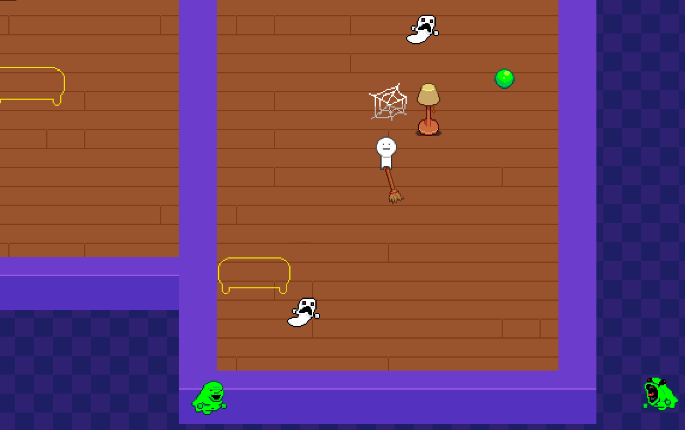

Project: Haunted House Flipper
Made in one weekend for the PHS APP Hackathon. Following the prompt "restoration and renovation", the game is about organizing cluttered homes while avoiding deadly ghosts. All of the art and programming was done in GameMaker.
Github Repo